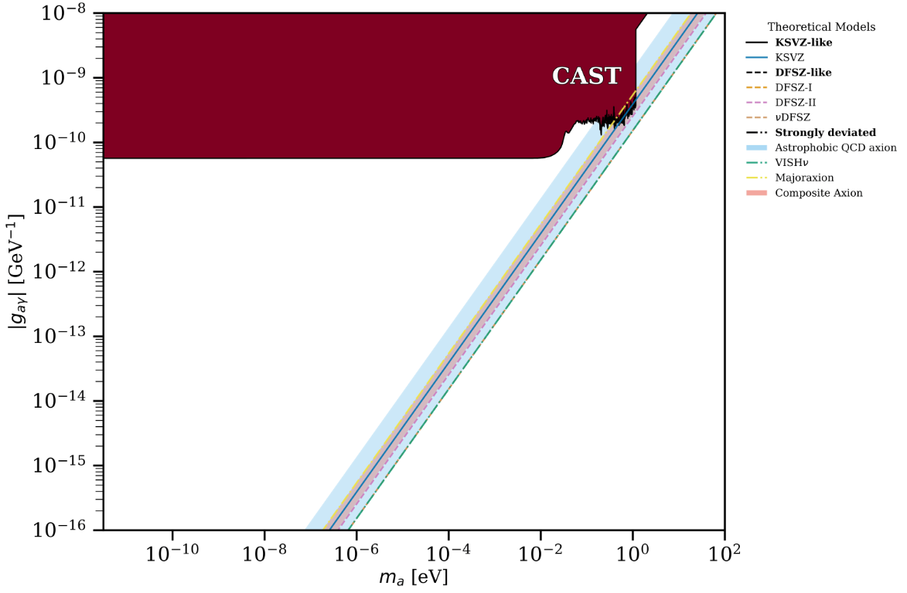

About
The project collects experimental limits and theoretical models for axion-like particles and provides an interactive plotting tool to explore the parameter space (mass vs coupling). The explorer preserves the original visual style while optimising interactivity for web deployment.

Screenshot of the interactive explorer (upload to /assets as screenshot.png).
Purpose
Make axion limits accessible and exploratory for researchers and the public: combine data, visualise constraints, and compare theoretical models in a single modern web app. The site runs the plotting app via Pyodide for full Python interactivity inside the browser.
How it works (high level)
- Data & plotting functions live in PlotFuncs.py and the limit_data/ folder.
- The browser downloads a small assets bundle and runs the Panel app via Pyodide.
- Interactive widgets are optimised to minimise file I/O and expensive figure recreation.
- Explorer preserves existing features: model bands, experimental limits, download button and configurable axes.
Next steps / roadmap
- Polish onboarding text and add short tutorials for common tasks.
- Improve loading UX (progress indicator, lazy-loading heavy packages).
- Add export options for data and reproducible example scripts.